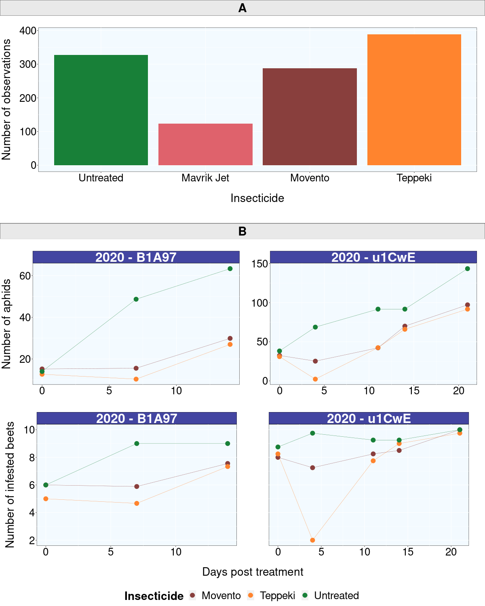
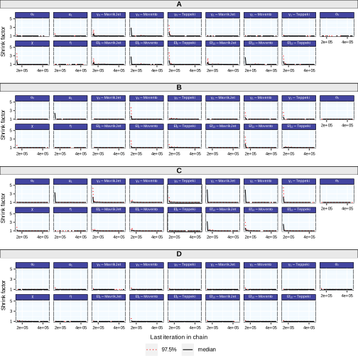
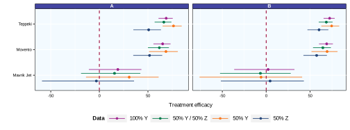
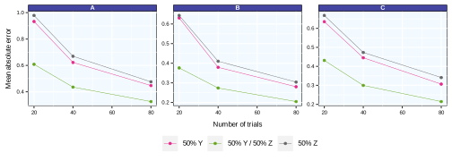
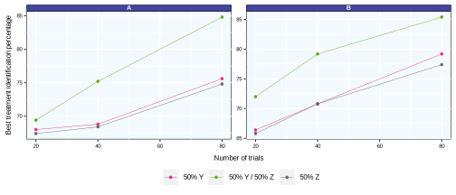
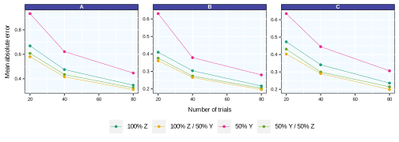
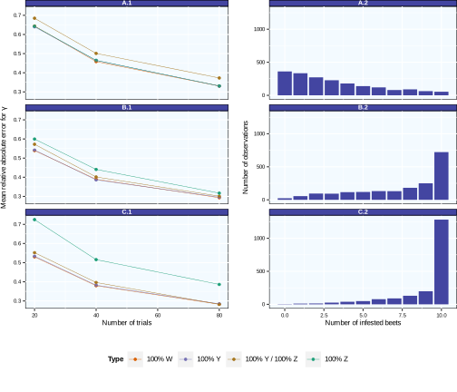

1 Introduction
In plant epidemiology, pest and disease presence can be measured in a host population using different metrics. A first metric measures the presence/absence of the pest in the individuals (plants) of the host population. This metric is often called prevalence or incidence (Madden and Hughes (1999), Shaw et al. (2018)). The prevalence describes the proportion of the host population in which the pest is present. This metric is relevant and widely used, but it does not account for the number of pest individuals per host individual. With the prevalence, a plant infected by one single pest individual (e.g., an insect) and a plant infected by many pest individuals both represents one infected plant. For this reason, pest abundance is sometimes assessed using another metric representing the average number of pest individuals per host individual. This metric is called intensity or severity (Madden and Hughes (1999), Shaw et al. (2018)), and describes the intensity of the disease in the target population. These two metrics do not generally have the same requirement in terms of working time; measuring intensity is indeed often more time demanding than measuring prevalence, in particular when the pest individuals are small, numerous, and difficult to detect.
Pest prevalence and intensity are commonly measured in factorial field trials to test the efficacy of different treatments. In this paper, we place ourselves in an important application framework which is the evaluation of alternative pesticide treatments to neonicotinoids against aphids in sugar beet. Indeed, neonicotinoids had been a popular chemical treatment to control aphids for many years, especially in sugar beets, a major crop in Europe. Recently, neonicotinoids were recognized as presenting high risks for the environment with a negative impact a wide range of non-target organisms, including bees (Wood and Goulson (2017), Pisa et al. (2015)), and this familly of pesticides had been banned in several European countries. In order to find a substitute to neonicotinoids, a number of factorial field trials were conducted to compare the efficacy of different alternative treatments during several years in different countries. Each trial consists of a set of plots divided into several blocks, themselves divided into several strips on which different pesticide treatments are randomly allocated. One strip always remains untreated to serve as a control. In each strip, aphid prevalence, aphid intensity or both metrics are measured in a sample of plants (usually, 10-20 plants per strip). Depending on the protocol and on the working time constraint, either one type or both types of metrics are measured. Consequently, for a given pest treatment, some of trials may report prevalence data while others report intensity data or both type of data. This heterogeneity raises several issues. A first issue concerns the statistical analysis of the trials reporting prevalence and intensity. Although it is easy to fit a generalized linear model to each type of data separately, it is less straightforward to fit a single model to the whole set of trials in order to obtain a single ranking of the pest treatements taking into account both types of data at the same time. Generally, factorial trials assessing treatment efficacy are analyzed with statistical models that take into account one of the two metrics but not both. Prevalence data are thus commonly analyzed using binomial generalized linear models and intensity data are frequently analyzed with Poisson generalized linear models (Michel, Brun, and Makowski (2017), Laurent et al. (2023), Agresti (2015)). As far as we know, no statistical model has been proposed to assess treatment efficacy based on the simultaneous analysis of prevalence and intensity data. Another issue concerns the practical value of combining both prevalence and intensity data. It is unclear whether the simultaneous analysis of prevalence and intensity data will increase the accuracy of the estimated treatment efficacy compared to the use of a single type of data, and whether this will increase the probability of identifying the most efficient treatments. Finally, it is also unclear how future trials should be designed, in particular how many trials are required to obtain accurate estimations, and whether intensity data should be prefered to prevalence data.
In this paper, we propose a new flexible statistical model that can be used to rank pest treatments from trials including prevalence data, intensity data, or both. We apply it to a real dataset including trials testing the efficacy of pesticides against aphids infesting sugar beets, considering contrasted scenarios of data availability, and we show how the proposed model can be used to evaluate the efficacy of different treatments. Based on simulations, we then quantify the reduction of mean absolute errors in the estimated treatment efficacies induced by the combination of prevalence and incidence data compared to the use of a single type of data. The rest of the paper is organized as follows. First, we present the structure of the dataset including real prevalence and intensity data. Next, we describe in detail the proposed model, the inference method, and the simulation strategy. After checking the convergence of the fitting algorithm, we show how the model can be used to assess treatement efficacy. We finally present the results based on simulated data and we make several recommendations.
2 Material and Method
2.1 Desciption of the data
Data were collected in 32 field trials conducted in France, Belgium and Netherlands to compare several treatments against aphids in sugar beets. Each trial consists in a plot located in a given site at a given year (site-year) divided into one to four blocks. Each of these blocks is itself divided into strips where different treatments are tested, one of these treatments being an untreated control and the others corresponding to different types of insecticide. In each strip of each block, the number of aphids was counted on a sample of 10 beet plants (intensity). The number of infested plants (prevalence) was measured as well, but only in 15 trials out of 32. The total numbers of intensity and prevalence data are equal to 1128 and 561, respectively. Note that the number of aphids was not counted on each beet plant but in the whole plant sample. Intensity and prevalence were monitored at different dates during the growing season. As shown in Figure 1 A, the dataset is unbalanced as less data are available for the treatment Mavrik-jet compared to the others. Figure 1B shows that the intensity and prevalence tend to increase with time.
2.2 Model
2.2.1 Specification
We introduce an unobserved variable representing the number of pest individuals (here, aphids) on each plant in a sample of N plants (here, sugar beets). This variable is noted W and is assumed to follow a Poisson probability distribution whose mean value is a function of time.
We use the following indexes: i for the trial, j for the treatment, k for the block, t for the time and s for the plant number. The distribution of W_{ijkts} is defined as:
W_{ijkts}\sim\mathcal{P}(\lambda_{ijkt}) \tag{1}
\log\ \lambda_{ijkt} = \alpha_0 + \beta_{0i} + \gamma_{0j} + (\alpha_1 + \gamma_{1j})\ X_t + u_{ij} + \epsilon_{ijkt} \tag{2}
with
- \beta_{0i}\sim\mathcal{N}(0, \sigma_0^2)
- u_{ij}\sim\mathcal{N}(0, \chi^2)
- \epsilon_{ijkt}\sim\mathcal{N}(0,\eta^2)
The random variables are all assumed independent. The combination of fixed and random effects used in Equation 2 has been validated in a previous study (Laurent et al. (2023)).
The observed variables (intensity and prevalence) can be expressed as a function of W. We note:
- Y_{ijkt} the number of pest individuals (aphids) in the sample of N_i plants collected in trial i, treatment j, block k, at time t
- Z_{ijkt} the number of infested plants among the N_i plants collected in trial i, treatment j, block k, at time t
Then, assuming the Ws independent, we have:
Y_{ijkt} = \sum\limits_{s = 1}^{N_i} W_{ijkts}\ \hspace{1cm}\ Y_{ijkt} \sim \mathcal{P}(N_{i}\lambda_{ijkt}) \tag{3}
Z_{ijkt} = \sum\limits_{s = 1}^{N_i} \boldsymbol{1}_{W_{ijkts}>0}\ \hspace{1cm} \ Z_{ijkt} \sim \mathcal{B}(N_{i},\ \pi_{ijkt}) \tag{4}
where \pi_{ijkt} = 1-\text{exp}(-\lambda_{ijkt}). The different quantities used by the model are defined in Table 1.
| i | trial index |
| j | treatment index |
| k | block index |
| t | time index |
| s | plant index |
| N_i | sample size (number of plants) |
| \lambda_{ijkt} | mean number of pest individuals (aphids) on one plant |
| \pi_{ijkt} | probability for a plant to be infested |
| \alpha_0 | mean number of pest individuals (aphids) in the untreated group |
| \beta_{0i} | trial effect |
| \gamma_{0j} | treatment effect |
| \alpha_1 | growth parameter of the number of pest individuals for the untreated group |
| \gamma_{1j} | treatment effect over time |
| X_t | number of days post treatment |
| u_{ij} | random interaction between trial and treatment |
| \epsilon_{ijkt} | residuals |
From this model we defined the efficacy of the jth treatment at time t (t days after pesticide application) by the quantity (Laurent et al. (2023)):
\text{Ef}_{jt} = \Big(1 - \text{exp}\big(\gamma_{0j}+\gamma_{1j} \times X_{t}\big)\Big) \times 100 \tag{5}
The quantity \text{Ef}_{jt} corresponds to the expected percentage reduction of pest individuals (aphid numbers) for the jth treatment compared to the untreated group, over trials and blocks.
2.2.2 Inference on real data
The model parameters were estimated using a Bayesian inference with a Markov chain Monte-Carlo method. We performed the inference using R, with the package rjags (Plummer (2022)). For each of the six dataset listed in Table 2, we fitted the model (Equation 2 - Equation 4) with the following weakly informative priors: \mathcal{N}(0, 10^3) for the parameters \alpha_0,\ \gamma_0,\ \alpha_1,\ \gamma_1 and \mathcal{U}([0, 10]) for the parameters \sigma_0, \chi, \eta. We used two Markov chains with 2 \times 10^5 iterations (after an adaptating phase of 10^5 iterations), and we centered the time variable t to facilitate the convergence.
The convergence of the MCMC algorithm was checked by inspecting the mixing of the two Markov chains and monitoring the Gelman-Rubin diagnosis statistics (Gelman and Rubin (1992)). We then computed the posterior mean of the pesticide treatment efficacy (defined by Equation 5) as well as its 95% credibility interval. The code used to fit the model is provided below.
Hide/Show the code
# The following code presents the inference on an extract fo the real
# dataset, which includes both trials of figure 1B (2020 - B1A97 ; 2020 -
# u1CwE). It is a demo for the "50% Y / 50% Z" scenario and we set here the
# number of adaptation and iteration to 2000 in order to reduce computation
# time.
# Jags code for the model #################################################
modelstringYZ = "
model {
# Likelyhood #####################################################
for (i in 1:Q){
Y[i] ~ dpois(N[i] * lb[i])
Z[i] ~ dbinom(pi[i], N[i])
log(lb[i]) = beta0[ID[i]] + gamma0[INSEC[i]] + (alpha1 +
gamma1[INSEC[i]]) * TIME[i] + u[ST[i]] + epsi[i]
pi[i] = 1 - exp(- lb[i])
epsi[i] ~ dnorm(0, pi_eps)
}
for (j in 1:K){
beta0[j] ~ dnorm(alpha0, tau0)
}
for (c in 1:M){
u[c] ~ dnorm(0, invchi)
}
gamma0[1] = 0
gamma1[1] = 0
# Priors #########################################################
for (s in 2:L){
gamma0[s] ~ dnorm(0, 0.001)
gamma1[s] ~ dnorm(0, 0.001)
}
alpha0 ~ dnorm(0, 0.001)
alpha1 ~ dnorm(0, 0.001)
sigma0 ~ dunif(0, 10)
chi ~ dunif(0, 10)
eta ~ dunif(0, 10)
# Derived Quantities #############################################
tau0 = pow(sigma0, -2)
invchi = pow(chi, -2)
pi_eps = pow(eta, -2)
for (h in 2:L){
for(t in 1 : T){
Eff[h, t] = (1 - exp(gamma0[h] + gamma1[h] *
TIME_unique[t])) * 100
}
}
}
"
writeLines(modelstringYZ, con = "Files_for_code/modelYZ.txt")
############################################################################
# Inference example on the extract of the real dataset #####################
load(file = "Files_for_code/real_data_extract.Rdata")
data = real_data_extract %>%
mutate(tscaled = scale(DPT), st = paste(ID, Insecticide))
# Building scenarios -------------------------------------------------------
scenarioY = data %>% mutate(Z = NA)
scenarioYhalfZhalf = data %>% mutate(Y = ifelse(ID == "2020 - B1A97", Y, NA),
Z = ifelse(ID == "2020 - B1A97", NA, Z))
scenarioYhalf = data %>% filter(ID == "2020 - B1A97") %>% mutate(Z = NA)
scenarioZhalf = data %>% filter(ID == "2020 - u1CwE") %>% mutate(Y = NA)
# ---------------------------------------------------------------------------
data = scenarioYhalfZhalf
Y = data$Y; Q = length(Y); N = data$N; Z = data$Z
ID = as.numeric(as.factor(as.character(data$ID)));
INSEC = as.numeric(as.factor(as.character(data$Insecticide)));
TIME = as.numeric(data$tscaled);
ST = as.numeric(as.factor(as.character(data$st)));
K = length(unique(ID)); L = length(unique(INSEC));
M = length(unique(ST));
df_TIME = suppressMessages(data %>%
group_by(DPT, tscaled) %>%
summarise(n = n()) %>% as.data.frame)
TIME_unique = approx(df_TIME$DPT, df_TIME$tscaled, xout = c(6, 12))$y;
T = length(unique(TIME_unique))
data_jags = list(
"Y" = Y, "Z" = Z, "Q" = Q, "ID" = ID, "INSEC" = INSEC,
"TIME" = TIME, "ST" = ST, "K" = K, "L" = L, "M" = M,
"N" = N, "T" = T, "TIME_unique" = TIME_unique
)
nadapt = 2000; niter = 2000
model <- jags.model("Files_for_code/modelYZ.txt", data = data_jags,
n.chains = 2, n.adapt = nadapt)
samples <- coda.samples(model,
variable.names = c("gamma0", "gamma1", "Eff"),
n.iter = niter, thin = 10)
save(samples, file = "Files_for_code/Results/Real_data/samples.Rdata")
############################################################################In practice, it is common that only Y or Z data are available in some of the trials. In this case, the resulting dataset includes observations of Y in some trials and observations of Z in others. The dataset may even include one type of observations only, either Y or Z, in all trials. Here, we define four scenarios with contrasted levels of Y and Z availability in order to evaluate the consequences of using different types of datasets. We consider four datasets including trials with observations of Y, with observations of Z, or with both types of observation in different proportions (Table 2). The dataset “100% Y” includes Y data collected in the 32 trials. The dataset “50%Y” includes Y data collected in the 17 trials for which no Z observation is available. The dataset “50% Z” includes the Z data collected in the 15 trials for which Z observations are available. The dataset “50% Y - 50% Z” includes Y data collected in 17 trials and Z data collected in the other 15 trials. The later dataset does include any trial reporting both Y and Z data.
The hierarchical model defined above is fitted to each dataset in turn. Each fitted model is then used to compute the posterior mean and 95% credibility interval of Ef_{jt} for each treatment at t=6 and 12 days after pesticide application.
| Type of dataset | Description |
|---|---|
| 100% Y | Y observations available in the 32 trials |
| 50% Y | Y observations available in 17 trials and no Z |
| 50% Z | Z observations available in 15 trials and no Y |
| 50% Y / 50% Z | Y observations available in 17 trials and Z observations available in the other 15 trials |
2.2.3 Simulations
Simulations are carried out to further investigate the impact of the type and amount of data available on the accuracy of the parameters and the ability of the model to identify the most and least effective treatments.
We define three numbers of trials, equal to 20, 40 and 80, successively. For data simulations, the model parameters are set equal to those estimated from the real dataset “100% Y” defined in Table 2 (posterior means). For each number of trials, we generate virtual data from the model (Equation 1 - Equation 4) and estimate the model parameters, according to the following procedure:
- Draw values of \beta_{0i},\ u_{ij} and \epsilon_{ijkt} in their distributions for each trial, 3 treatments (+ the untreated control), 3 dates (t=0, 6, 12), and 4 blocks
- Calculate \lambda_{ijkt} from Equation 2,
- Draw values of W_{ijkts} in its Poisson distribution for 10 plants (s=1, …, 10)
- Calculate Y_{ijkt} and Z_{ijkt} from the Ws for each trial, treatment, date, block.
- Generate the eight sub datasets corresponding to the scenarios defined in Table 3 (including all values of W, the generated values of Y only, the generated values of Z only, both Y and Z values but not W, the values of Y in 50% of the trials, the values of Z in 50% of the trials, the values of Y in 50% of the trials and the values of Z in the other 50%),
- Fit the model (Equation 1 - Equation 4) to each of the sub datasets according to the procedure described above based on MCMC.
At the end of this procedure, we get eight sets of estimated parameters, corresponding to the eight scenarios defined in Table 3. This procedure is repeated 974 times with each time a different seed between 0 and 999, thus generating eight series of 974 sets of estimated model parameters for each trial number.
For each number of trials and each scenario defined in Table 3, the accuracy of the estimated parameters \gamma (from which depend the treatment efficacies) is evaluated by computing an absolute error, averaged over the three treatments (j=1 corresponding to the control) as:
E_{\gamma} = \frac{1}{2 \times 3}\sum\limits_{j = 2}^{4} \Big( \frac{|\gamma_{0j} - \hat{\gamma}_{0j}|}{|\gamma_{0j}|} + \frac{|\gamma_{1j} - \hat{\gamma}_{1j}|}{|\gamma_{1j}|}\Big) \tag{6}
where the true parameter values are set equal to the posterior means computed with the real dataset, and the parameter estimates (\hat{\gamma}_{0j} and \hat{\gamma}_{1j}) are the posterior means computed for the jth treatment. For each trial number and each scenario defined in Table 3, the 974 values of E_{\gamma} obtained for the 974 generated sub datasets are then averaged. The average values obtained for the eight scenarios are finally compared to determine the type of data leading to the most accurate estimated parameter values.
In addition, we compare the eight scenarios according to another criterion measuring the difference between the estimated efficacy values and the true efficacy value (averaged over the three pesticide treatments considered), as follows:
E_{\text{Ef}_{t}}\ = \frac{1}{3} \sum\limits_{j = 2}^4 \frac{|\text{Ef}_{jt} - \hat{\text{Ef}}_{jt}|} {|\text{Ef}_{jt}|} \tag{7}
where the true treatment efficacy is defined by Equation 5 (setting the parameters \gammas to the posterior means obtained with the real dataset) and the estimated efficacy (\hat{\text{Ef}}_{jt}) is the posterior mean computed with the simulated dataset. The 974 values of E_{\text{Eft}} obtained from the 974 simulated datasets are then averaged for each trial number and each scenario. Finally, we evaluate the proportions of cases where the true best treatment (i.e., the treatment with the highest efficacy) is correctly identified.
In order to determine whether the difference of performance obtained with the types of data Y and Z depends on the pest abundance, we perform an additional series of simulations with three values for the model parameter \alpha_0, equal to -1,\ 1 and 2, successively. These three values of \alpha_0 define three contrasted levels of pest abundance (the higher \alpha_0, the higher the abundance). We used the procedure outlined above considering only two scenarios of data availability, namely “100% Y” and “100% Z”. This procedure is implemented with each value of \alpha_0 in turn. The results are used to compare the model performances using either Y or Z for parameter estimation, depending of the pest abundance specified by \alpha_0.
| Type of dataset | Description |
|---|---|
| 100% W | W observations available in all the trials |
| 100% Y | Y observations available in all the trials |
| 100% Z | Z observations available in all the trials |
| 100% Y - 100 Z | Y and Z observations available in all the trials |
| 50% Y | Y observations available in half of the trials |
| 50% Z | Z observations available in half of the trials |
| 50% Y / 50% Z | Y observations available in half of the trials and Z observations available in the other half of the trials |
| 100% Z / 50% Y | Y observations available in half of the trials and Z observations available in all the trials |
The code used to perform the simulations is presented below.
Hide/Show the code
# The following code presents the inference for one seed. As the calculus
# time is growing fast with the number of trials and the number of sampled
# values, we set here the number of trials to 10 (I = 10) and the number
# of adaptations and iterations to 2000.
# Ours simulations results are obtained by running this code for I = 10, 20,
# 40, 80, for all seeds between 0 and 999, with a number of adaptations and
# iterations equal to 36000. We used the Migale server from INRAE to run
# these simulations.
# Function to simulate data ################################################
J = 4; T = 3; N = 10; K = 4;
Block = c(1 : K); Band = c(1 : J);
Beet = c(1 : N); DPT = seq(0, 12, length.out = T);
alpha0 = 0.5; gamma0 = c(0, - 0.13, - 1.13, - 1.24);
alpha1 = 0.16; gamma1 = c(0, 0.24, - 0.14, - 0.15);
sig0 = 1.87; chi = 0.27; eta = 0.98
simu_data <- function(seed, I){
set.seed(seed)
ID = c(1 : I);
data = expand_grid(ID = c(1 : I), Block = c(1 : K), Band = c(1 : J),
Beet = c(1 : N), DPT = seq(0, 12, length.out = T))
data = data %>%
mutate(Insecticide = ifelse(DPT <= 0, "T 1", paste("T", Band)),
tscaled = scale(data$DPT)) %>%
mutate(st = paste(ID, Insecticide),
sbit = paste(ID, Block, Insecticide, DPT))
Insecticide = data$Insecticide %>% unique %>% sort
names(gamma0) = Insecticide
names(gamma1) = Insecticide
beta0 = rnorm(I, sd = sig0);
u = rnorm(I * J, sd = chi);
epsi = rnorm(I * J * K * (T - 1) + I * K, sd = eta);
names(beta0) = data$ID %>% unique;
names(u) = data$st %>% unique
names(epsi) = data$sbit %>% unique
data = data %>% mutate(alpha0 = alpha0,
alpha1 = alpha1,
N = N,
beta0 = recode(ID, !!!beta0),
gamma0 = recode(Insecticide, !!!gamma0),
gamma1 = recode(Insecticide, !!!gamma1),
u = recode(st, !!!u),
epsi = recode(sbit, !!!epsi))
data$lb = exp(data$alpha0 + data$beta0 + data$gamma0 + (data$alpha1 +
data$gamma1) * data$tscaled + data$u + data$epsi)
data$W = sapply(c(1 : (I * J * K * T * N)),
function(x) rpois(1, data$lb[x]))
dataYZ = data %>% group_by(ID, Block, Band, DPT) %>%
summarise(Insecticide = unique(Insecticide),
tscaled = unique(tscaled), st = unique(st), N = unique(N),
Y = sum(W), Z = sum(W > 0)) %>% as.data.frame
dataW = data %>% select(- alpha0, - alpha1, - beta0, - gamma0, - gamma1,
- u, - epsi, - lb)
return(list("dataYZ" = dataYZ, "dataW" = dataW))
}
############################################################################
# Building scenarios #######################################################
# Scenarios "50% Y" and "50% Z" are obtained from scenarios "100% Y" and
# "100% Z", respectively. For example "50% Y" scenario with 40 trials
# corresponds to "100% Y" with 20 trials.
seed = 1; I = 10
data = suppressMessages(simu_data(seed = seed, I = I))
scenarios = list(
Y = data$dataYZ %>% mutate(Z = NA),
Z = data$dataYZ %>% mutate(Y = NA),
YhalfZhalf = data$dataYZ %>% mutate(Y = ifelse(ID <= (I / 2), NA, Y),
Z = ifelse(ID > (I / 2), NA, Z)),
YhalfZ = data$dataYZ %>% mutate(Y = ifelse(ID <= (I / 2), NA, Y)),
YZ = data$dataYZ,
W = data$dataW
)
#############################################################################
# Inference #################################################################
nadapt = 2000; niter = 2000
res_inf = NULL
# Inference YZ --------------------------------------------------------------
ID = as.numeric(as.factor(as.character(scenarios$Y$ID)));
INSEC = as.numeric(as.factor(as.character(scenarios$Y$Insecticide)));
TIME = as.numeric(scenarios$Y$tscaled);
ST = as.numeric(as.factor(as.character(scenarios$Y$st)));
K = length(unique(ID));
L = length(unique(INSEC));
M = length(unique(ST))
TIME_unique = unique(scenarios$Y$tscaled)[2 : 3]
T = length(unique(TIME_unique))
for(i in (1 : 5)){
Y = scenarios[[i]]$Y; Z = scenarios[[i]]$Z;
N = scenarios[[i]]$N; Q = length(Y)
data_jags = list(
"Y" = Y, "Z" = Z, "Q" = Q, "ID" = ID, "INSEC" = INSEC,
"TIME" = TIME, "ST" = ST, "K" = K, "L" = L, "M" = M,
"N" = N, "T" = T, "TIME_unique" = TIME_unique
)
model <- jags.model("Files_for_code/modelYZ.txt", data = data_jags,
n.chains = 2, n.adapt = nadapt)
samples <- coda.samples(model,
variable.names = c("gamma0", "gamma1", "Eff"),
n.iter = niter, thin = 10)
bind = list(samples);
names(bind) = paste("samples", names(scenarios)[i], sep = "_")
res_inf = res_inf %>% append(bind)
}
# Inference W ---------------------------------------------------------------
ID = as.numeric(as.factor(as.character(scenarios$W$ID)));
INSEC = as.numeric(as.factor(as.character(scenarios$W$Insecticide)));
TIME = as.numeric(scenarios$W$tscaled);
ST = as.numeric(as.factor(as.character(scenarios$W$st)));
SBIT = as.numeric(as.factor(as.character(scenarios$W$sbit)))
K = length(unique(ID)); L = length(unique(INSEC));
M = length(unique(ST)); X = length(unique(SBIT))
TIME_unique = unique(scenarios$W$tscaled)[2 : 3]
T = length(unique(TIME_unique))
W = scenarios$W$W; Q = length(W)
data_jags = list(
"W" = W, "Q" = Q, "ID" = ID, "INSEC" = INSEC,
"TIME" = TIME, "ST" = ST, "SBIT" = SBIT, "K" = K, "L" = L,
"M" = M, "X" = X, "T" = T, "TIME_unique" = TIME_unique
)
model <- jags.model("Files_for_code/modelW.txt", data = data_jags,
n.chains = 2, n.adapt = nadapt)
samples <- coda.samples(model,
variable.names = c("gamma0", "gamma1", "Eff"),
n.iter = niter, thin = 10)
res_inf = res_inf %>% append(list("samples_W" = samples))
############################################################################
# Formatting results #######################################################
t = scenarios$Y$tscaled %>% unique
Eff_6_true = (1 - exp(gamma0[2 : J] + gamma1[2 : J] * t[2])) * 100
Eff_12_true = (1 - exp(gamma0[2 : J] + gamma1[2 : J] * t[3])) * 100
truth = c(Eff_6_true, Eff_12_true, gamma0[2 : J], gamma1[2 : J])
n_scenarios = length(scenarios)
esti = lapply(
res_inf, function(x) summary(x)$statistics %>% as.data.frame %>%
rownames_to_column %>%
filter(!(grepl("gamma", rowname) & Mean == 0)) %>%
select(Mean) %>% as.matrix %>% as.vector
)
b_inf = lapply(
res_inf, function(x) summary(x)$quantiles %>% as.data.frame %>%
rownames_to_column %>%
filter(!(grepl("gamma", rowname) & `2.5%` == 0)) %>%
select(`2.5%`) %>% as.matrix %>% as.vector
)
b_sup = lapply(
res_inf, function(x) summary(x)$quantiles %>% as.data.frame %>%
rownames_to_column %>%
filter(!(grepl("gamma", rowname) & `2.5%` == 0)) %>%
select(`97.5%`) %>% as.matrix %>% as.vector
)
parameters = summary(res_inf[[1]])$statistics %>% as.data.frame %>%
rownames_to_column %>%
filter(!(grepl("gamma", rowname) & Mean == 0)) %>%
select(rowname) %>% as.matrix %>% as.vector
res = do.call(rbind,
lapply(c(1 : n_scenarios),
function(x)
data.frame(Truth = truth, Scenario = names(scenarios)[x],
I = I, seed = seed,
value = esti[[x]], parameters = parameters,
b_inf = b_inf[[x]], b_sup = b_sup[[x]]
)
)
)
############################################################################
# save(res, file = paste0("res.I.", I, ".seed.", seed, ".Rdata"))3 Results
3.1 Results obtained with real data
We present here the results obtained with real data. First, we check the convergence of the model for the scenarios defined in Table 2. We then compare the estimated values and the credibility intervals of the treatment efficacy obtained in the different scenarios.
3.1.1 Model convergence and posterior distributions
Figure 2 presents the Markov chains associated with the model parameters and treatment efficacies for the different scenarios. The x-axis presents the iteration number and the y-axis presents the sampled value. Results show that the chains are well mixed. Figure 3 presents the Gelman-Rubin statistics associated with the model parameters and treatement efficacies as a function of the iterations, for the different scenarios. We observe that this statistics converges to 1, which indicates the convergence of the algorithm.
Table 4 gives a summary of the posterior distributions of the model parameters and treatment efficacies obtained for the “100% Y” scenario. The significantly positive value of \alpha_1 indicates that the aphid numbers tend to increase with time in untreated plots. The relatively high value of \sigma_0 (posterior mean equal to 1.87) reveals a strong variability in aphid numbers between trials. The posterior mean value of \chi (0.27) suggests that the treatment efficacy varies across trials. The \gamma_0 parameter is negative for all three treatments, indicating a negative effect of the treatments on the aphid numbers at the time of pesticide spray. The Movento and Teppeki treatments have a similar effect with a posterior mean for \gamma_0 equal to -1.13 and -1.24, and a standard deviation equal to 0.12 and 0.11, respectively. The effect of treatment Mavrik Jet is weaker as its posterior mean for \gamma_0 is equal to -0.13 and its standard deviation is equal to 0.16. The \gamma_1 posterior means are negative for Movento and Teppeki (-0.14 and -0.15), suggesting that the effect of these treatments tend to increase with time, but the posterior mean value is positive for Mavrik Jet (= 0.24), suggesting that the effect of this treatment may decrease with time. However, the 95% credibility intervals of \gamma_1 include zero and these parameters are not very accurately estimated.


| Parameter | Mean | SD | 2.5% | 97.5% |
|---|---|---|---|---|
| \alpha_0 | 0.50 | 0.34 | -0.18 | 1.18 |
| \alpha_1 | 0.16 | 0.06 | 0.04 | 0.29 |
| \sigma_0 | 1.87 | 0.26 | 1.44 | 2.45 |
| \chi | 0.27 | 0.06 | 0.15 | 0.40 |
| \eta | 0.98 | 0.03 | 0.92 | 1.03 |
| \gamma_0 - untreated | 0.00 | 0.00 | 0.00 | 0.00 |
| \gamma_0 - Mavrik Jet | -0.13 | 0.16 | -0.45 | 0.17 |
| \gamma_0 - Movento | -1.13 | 0.12 | -1.37 | -0.89 |
| \gamma_0 - Teppeki | -1.24 | 0.11 | -1.46 | -1.03 |
| \gamma_1 - untreated | 0.00 | 0.00 | 0.00 | 0.00 |
| \gamma_1 - Mavrik Jet | 0.24 | 0.13 | -0.01 | 0.48 |
| \gamma_1 - Movento | -0.14 | 0.10 | -0.34 | 0.05 |
| \gamma_1 - Teppeki | -0.15 | 0.09 | -0.32 | 0.02 |
3.1.2 Estimated values of pesticide treatment efficacies
Figure 4 presents the posterior means and the 95% credibility intervals of treatment efficacies at 6 days (A) and 12 days (B) after pesticide spray, for the “100% Y”, “50% Y / 50% Z”, “50% Y” and “50% Z” scenarios. Different scenarios are indicated by different colors. The x-axis presents the efficacy and the y-axis presents the treatments. Overall, the results obtained are consistent across scenarios; Teppeki and Movento show higher mean efficacies than Mavrik Jet, and the credibility intervals are narrower for Teppeki and Movento than for Mavrik Jet in all scenarios. The credibility interval of the “100% Y” scenario is narrower than that of the “50% Y / 50% Z” scenario, which is itself narrower than that of the “50% Y” and “50% Z” scenarios. Table 5 quantifies the differences in the sizes of the credibility intervals and present the reduction percentage in the credibility interval sizes of the “100% Y”, “50% Y / 50% Z” and “50% Z” scenarios, compared to the “50% Y” scenario, for all the treatment efficacies at 6 days (third column) and at 12 days (fourth column) after pesticide spray. A positive (negative) value corresponds to an increase (decrease) of the credibility interval size compared to “50% Y”. For example, the credibility interval size obtained for the efficacy of Movento at 6 days is 40.5% smaller with the “100% Y” scenario than with the “50% Y” scenario. Overall, the credibility interval sizes obtained with the “100% Y” scenario are 25 to 45% smaller than those obtained with the “50% Y” scenario. This indicates that the accuracy of the estimated treatment efficacies is improved by doubling the number of Y observations. Results show that the credibility intervals are often larger with “50% Z” than with “50% Y”, suggesting that better esimtations are obtained using Y than Z when only a limited number of data is available, at least in this case study. Interestingly, the sizes of the credibility intervals are smaller by about 25% with “50% Y / 50% Z” compared to “50% Y”, showing that the combination of Y and Z observations collected in different trials in beneficial and lead to a reduction of the uncertainty in the estimated treatment efficacy. The latter result illustrates how the estimation of treatment efficacy could be improved by combining trials with prevalence data and trials with intensity data.

| Insecticide | Data | At 6 days | At 12 days |
|---|---|---|---|
| Mavrik Jet | 100% Y | - 27.7 | - 41.3 |
| Movento | 100% Y | - 40.5 | - 46.7 |
| Teppeki | 100% Y | - 25.6 | - 37.8 |
| Mavrik Jet | 50% Y / 50% Z | - 18.4 | - 31.1 |
| Movento | 50% Y / 50% Z | - 27.1 | - 31.4 |
| Teppeki | 50% Y / 50% Z | - 12.1 | - 22.4 |
| Mavrik Jet | 50% Z | 26.7 | - 19.1 |
| Movento | 50% Z | 0.8 | - 9.8 |
| Teppeki | 50% Z | 44.4 | 16.9 |
3.2 Results obtained by simulation
3.2.1 Interest of combining trials with prevalence and trials with intensity
In this section, we consider the situation where only one type of observation is available per trial - pest prevalence or pest intensity. We compare the accuracy of the estimated parameters and estimated levels of treatment efficacy obtained by combining both types of trials compared to the results obtained using each set of trials separately.
The parameters used to generate the data are given in table 6.
| \alpha_0 | \alpha_1 | \gamma_{01} | \gamma_{02} | \gamma_{03} | \gamma_{04} | \gamma_{11} | \gamma_{12} | \gamma_{13} | \gamma_{14} | \sigma_0 | \eta | \chi |
|---|---|---|---|---|---|---|---|---|---|---|---|---|
| \text{\small 0.5} | \text{\small 0.16} | \text{\small 0} | \text{\small -0.13} | \text{\small -1.13} | \text{\small -1.24} | \text{\small 0} | \text{\small 0.24} | \text{\small -0.14} | \text{\small -0.15} | \text{\small 1.87} | \text{\small 0.27} | \text{\small 0.98} |
Figure 5 represents the E_{\gamma} (Equation 6) (A), E_{Ef_6} (Equation 7) (B) and E_{Ef_{12}} (Equation 7) (C) evaluation criteria for the “50% Z”, “50% Y” and “50% Y / 50% Z” scenarios (different scenarios are indicated by different colors. The x-axis presents the number of trials and the y-axis the value of the criterion, averaged over the simulated data sets. For each number of trials and for each criterion, we observe that scenario “50% Y / 50% Z” gives a more accurate estimate than scenario “50% Y” which itself gives a more accurate estimate than scenario “50% Z”. For example, for the efficacy at 6 days with 40 trials, the mean absolute error of scenario “50% Y” is 10% less than the mean absolute error of scenario “50% Z” (0.38 vs 0.42). The mean absolute error of scenario “50% Y / 50% Z” is 35% less than that of scenario “50% Z” (0.26 vs 0.42). The values of the three criteria decrease with the number of trials. The E_{\gamma} criterion decreases from 0.62 with 20 trials to 0.32 with 80 trials for the “50% Y / 50% Z” scenario. A value of 20 trials is therefore not sufficient to obtain an accurate estimate of the parameters.

Figure 6 presents the percentages of cases where the best treatment at 6 days (A) and 12 days (B) has been correctly identified for the “50% Y”, “50% Z” and “50% Y / 50% Z” scenarios. The x-axis presents the number of trials and the y-axis the percentage of cases where the treatment identification is correct. In general, the best treatment is better identified when the number of trials increases. With the “50% Y / 50% Z” scenario, the best treatment at 6 days is well identified in 69% of cases with 20 trials and in 85% of cases with 80 trials. For each number of trials, the percentage of correctly identification is higher for the “50% Y / 50% Z” scenario than for the other two, and the scenario “50% Y” generally gives better results than the scenario “50% Z”, except at 6 days with 20 trials. For example, at 12 days after treatment and with 40 trials, the percentage of correct identification is 5% higher with scenario “50% Y - 50% Z” than with scenario “50% Y” (78 vs 73), and 4% higher with the scenario “50% Y” than with scenario “50% Z” (73 vs 69). These results show the interest of combining prevalence and intensity data for assessing the efficacy of treatments and indentifying the best treatments.

3.2.2 Interest of adding intensity when prevalence is measured in all trials
We now consider a situation where prevalence is measured in each trial and intensity is measured in only some of these trials. We compare the results obtained when the data are combined and when they are used separately. As the prevalence data are usually more accessible in practice and the intensity data more costly, it is important to evaluate the interest of adding intensity data in the statistical analysis.
The parameters used to generate the data are the same as in 3.2.1.
Figure 7 presents the evaluation criteria E_{\gamma} (Fig 7A), E_{Ef_6} (Fig 7B) and E_{Ef_{12}} (Fig. 7C) for the scenarios “100% Z”, “50% Y”, “100% Z / 50% Y” and “50% Y / 50% Z”. The x-axis presents the number of trials and the y-axis presents the value of the criterion, averaged over the number of simulated data sets. Results show that the mean absolute errors are lower in scenarios “100% Z / 50% Y” and “50% Y / 50% Z” than in “100% Z”, and that the mean absolute errors are lower in the “100% Z” scenario than in the “50% Y” scenario. For example, considering the treatment efficacy at 12 days with 40 trials (Fig. 7C), the mean absolute errors are 13% lower in scenarios “100% Z / 50% Y” and “50% Y / 50% Z” than in “100% Z” (0.30 vs 0.34), and the mean absolute error is 11% lower in “100% Z” than in “50% Y” (0.34 vs 0.38). Clearly, adding intensity data to prevalence data improves the accuracy of the estimations. The mean absolute errors decrease with the number of trials. For example, the E_{\gamma} criterion decreases from 0.62 with 20 trials to 0.32 with 80 trials for the “50% Y / 50% Z” scenario. As noted above, 20 trials is clearly not sufficient to obtain accurate results.

3.2.3 Is it better to measure intensity or prevalence in new pest surveys?
In order to optimize the design of new pest surveys that might be conducted in the future, we determine which type of observations should be favored. For that purpose, we compare the results obtained with the “100% Y”, “100% Z”, “100% Y / 100% Z” and “100% W” scenarios, for different values of \alpha_0 that defines the average number of infested plants. With \alpha_0 = -1, the proportion of infested plants is generally much lower than one, while with \alpha_0 = 2, 100% of plants are generally infested. The case \alpha_0 = 1 leads to intermediate levels of infestation.
The three parameter sets used to generate the data are given in Table 7 and are labeled A, B and C.
| Set | \ \alpha_0 | \alpha_1 | \gamma_{01} | \gamma_{02} | \gamma_{03} | \gamma_{04} | \gamma_{11} | \gamma_{12} | \gamma_{13} | \gamma_{14} | \sigma_0 | \eta | \chi |
|---|---|---|---|---|---|---|---|---|---|---|---|---|---|
| \text{\small A} | \textbf{\small\ -1} | \text{\small 0.16} | \text{\small 0} | \text{\small -0.13} | \text{\small -1.13} | \text{\small -1.24} | \text{\small 0} | \text{\small 0.24} | \text{\small -0.14} | \text{\small -0.15} | \text{\small 0.3} | \text{\small 0.27} | \text{\small 0.98} |
| \text{\small B} | \textbf{\small\ 1} | \text{\small 0.16} | \text{\small 0} | \text{\small -0.13} | \text{\small -1.13} | \text{\small -1.24} | \text{\small 0} | \text{\small 0.24} | \text{\small -0.14} | \text{\small -0.15} | \text{\small 0.3} | \text{\small 0.27} | \text{\small 0.98} |
| \text{\small C} | \textbf{\small\ 2} | \text{\small 0.16} | \text{\small 0} | \text{\small -0.13} | \text{\small -1.13} | \text{\small -1.24} | \text{\small 0} | \text{\small 0.24} | \text{\small -0.14} | \text{\small -0.15} | \text{\small 0.3} | \text{\small 0.27} | \text{\small 0.98} |
Figure 8 (A.1, B.1 and C.1) shows the mean absolute error E_{\gamma} (Equation 6) as a function of the number of trials for the four scenarios “100% Y”, “100% Z”, “100% Y / 100% Z” and “100% W”. Figure 8 (A.2, B.2 and C.2) shows the distributions of infested plants with 40 trials corresponding to the three values of \alpha_0 reported in Table 7. In case A (Table 7), the distribution of Z is such that Z is rarely close to 1 and often lower than 0.5 (Figure 8 A.2). In case C, the distribution of Z is such that Z is often very close to 1 (100% of plants infested). Case B is intermediate. The accuracy of the estimated values of the model parameters \gamma is better with scenario “100% Y” than with scenario “100% Z”, for all number of trials. The advantage of “100% Y” is stronger in case of high pest prevalence (i.e., cases B and C) but very small in case of low pest prevalence (case A). For example, with 20 trials, the mean absolute error is 27% lower in the scenario “100% Y” than in “100% Z” for parameter set C (0.55 vs. 0.75), 10% lower for parameter set B (0.55 vs. 0.62), and not different for parameter set A (0.64). The “100% W” scenario leads to similar results as “100% Y”, regardless of \alpha_0 and the number of trials. Results obtained with “100% Y / 100% Z” are generally similar to those obtained with “100% Y” and “100% W” but better than those obtained with the scenario “100% Z” in cases B and C. Here again, results show that 20 trials are not sufficient to obtain accurate parameter estimates.

4 Conclusion
In order to evaluate pest treatment efficacy, numerous trials are conducted to monitor pest prevalence and intensity. Quite often, only one type of data is available and, when both prevalence and intensity are available, they are usually analysed separately. In this paper, we proposed an alternative approach based on a hierarchical statistical model able to analyze intensity and prevalence data, simultaneously.
We successfully applied the model to a real dataset including prevalence and incidence data collected to evaluate three pesticide treatments against aphids in sugar beets. The model was fitted to this datased using a Markov chain Monte Carlo algorithm, and convergence was quickly achieved after a few thoushands iterations. Results showed that the use of both prevalence and intensity data let to a substantial reduction of the uncertainty in the parameter estimates, compared to the use of a single type of data.
Results obtained from simulated data confirmed that, when pest prevalence and pest intensity are collected separately in different trials, the model parameters are more accurately estimated combining both prevalence and intensity trials than using one type of trials only. We also found that, when prevalence data are collected in all trials and intensity data are collected in a subset of trials, estimations and pest treatment ranking are more accurate using both types of data than using prevalence data only. Moreover, when only one type of observation can be collected in a pest survey or in an experimental trial, our analysis indicates that it is usually better to collect intensity data than prevalence data, especially in situations where all or most of the plants are expected to be infested. Finally, our simulations show that it is unlikely to obtain accurate results with fewer than 40 trials when assessing the efficacy of pest control treatments based on prevalence and intensity data.
The model and codes presented in this paper can be easily implemented to analyze a diversity of pest trials and surveys including prevalence and/or intensity data.
Funding
This work was partly funded by the project SEPIM (PNRI) and by the RMT SDMAA.
Data availability
Simulated data and model parameters are available without restriction. The original experimental data may be available under request.
Acknowledgements
We are grateful to Anabelle Laurent, Elma Raaijmakers, Kathleen Antoons and to the institute ITB (https://www.itbfr.org/) for their comments on this project.
We are grateful to the INRAE MIGALE bioinformatics facility (MIGALE, INRAE, 2020. Migale bioinformatics Facility, doi: 10.15454/1.5572390655343293E12) for providing help and/or computing and/or storage resources.
References
Bibliography
Agresti, Alan. 2015. Foundations of Linear and Generalized Linear Models. John Wiley & Sons.
Gelman, Andrew, and Donald B Rubin. 1992. “Inference from Iterative Simulation Using Multiple Sequences.” Statistical Science, 457–72.
Laurent, Anabelle, Armand Favrot, Fabienne Maupas, Cédric Royer, and David Makowski. 2023. “Assessment of Non-Neonicotinoid Treatments Against Aphids on Sugar Beets.” Crop Protection 164: 106140. https://doi.org/10.1016/j.cropro.2022.106140.
Madden, LV, and G Hughes. 1999. “Sampling for Plant Disease Incidence.” Phytopathology 89 (11): 1088–1103.
Michel, Lucie, Francois Brun, and David Makowski. 2017. “A Framework Based on Generalised Linear Mixed Models for Analysing Pest and Disease Surveys.” Crop Protection 94: 1–12.
Pisa, Lennard W, Vanessa Amaral-Rogers, Luc P Belzunces, Jean-Marc Bonmatin, Craig A Downs, Dave Goulson, David P Kreutzweiser, et al. 2015. “Effects of Neonicotinoids and Fipronil on Non-Target Invertebrates.” Environmental Science and Pollution Research 22 (1): 68–102.
Plummer, Martyn. 2022. Rjags: Bayesian Graphical Models Using MCMC. https://CRAN.R-project.org/package=rjags.
Shaw, Allison K, Julie Sherman, F Keith Barker, and Marlene Zuk. 2018. “Metrics Matter: The Effect of Parasite Richness, Intensity and Prevalence on the Evolution of Host Migration.” Proceedings of the Royal Society B 285 (1891): 20182147.
Wood, Thomas James, and Dave Goulson. 2017. “The Environmental Risks of Neonicotinoid Pesticides: A Review of the Evidence Post 2013.” Environmental Science and Pollution Research 24 (21): 17285–325.
Reuse
Citation
BibTeX citation:
@article{favrot2023,
author = {Armand Favrot and David Makowski},
title = {A Hierarchical Model to Evaluate Pest Treatments from
Prevalence and Intensity Data},
journal = {Computo},
date = {2023-01-25},
url = {https://computo.sfds.asso.fr/},
doi = {to complete},
issn = {2824-7795},
langid = {en},
abstract = {In plant epidemiology, pest abundance is measured in field
trials using metrics assessing either pest prevalence (fraction of
the plant population infected) or pest intensity (average number of
pest individuals present in infected plants). Some of these trials
rely on prevalence, while others rely on intensity, depending on the
protocols. In this paper, we present a hierarchical Bayesian model
able to handle both types of data. In this model, the intensity and
prevalence variables are derived from a latent variable representing
the number of pest individuals on each host individual, assumed to
follow a Poisson distribution. Effects of pest treaments, time
trend, and between-trial variability are described using fixed and
random effects. We apply the model to a real dataset in the context
of aphid control in sugar beet fields. In this dataset, prevalence
and intensity were derived from aphid counts observed on either
factorial trials testing different types of pesticides treatments or
field surveys monitoring aphid abundance. Next, we perform
simulations to assess the impacts of using either prevalence or
intensity data, or both types of data simultaneously, on the
accuracy of the model parameter estimates and on the ranking of
pesticide treatment efficacy. Our results show that, when pest
prevalence and pest intensity data are collected separately in
different trials, the model parameters are more accurately estimated
using both types of trials than using one type of trials only. When
prevalence data are collected in all trials and intensity data are
collected in a subset of trials, estimations and pest treatment
ranking are more accurate using both types of data than using
prevalence data only. When only one type of observation can be
collected in a pest survey or in an experimental trial, our analysis
indicates that it is better to collect intensity data than
prevalence data when all or most of the plants are expected to be
infested, but that both types of data lead to similar results when
the level of infestation is low to moderate. Finally, our
simulations show that it is unlikely to obtain accurate results with
fewer than 40 trials when assessing the efficacy of pest control
treatments based on prevalence and intensity data. Because of its
flexibility, our model can be used to evaluate and rank the efficacy
of pest treatments using either prevalence or intensity data, or
both types of data simultaneously. As it can be easily implemented
using standard Bayesian packages, we hope that it will be useful to
agronomists, plant pathologists, and applied statisticians to
analyze pest surveys and field experiments conducted to assess the
efficacy of pest treatments.}
}
For attribution, please cite this work as:
Armand Favrot, and David Makowski. 2023. “A Hierarchical Model to
Evaluate Pest Treatments from Prevalence and Intensity Data.”
Computo, January. https://doi.org/to complete.